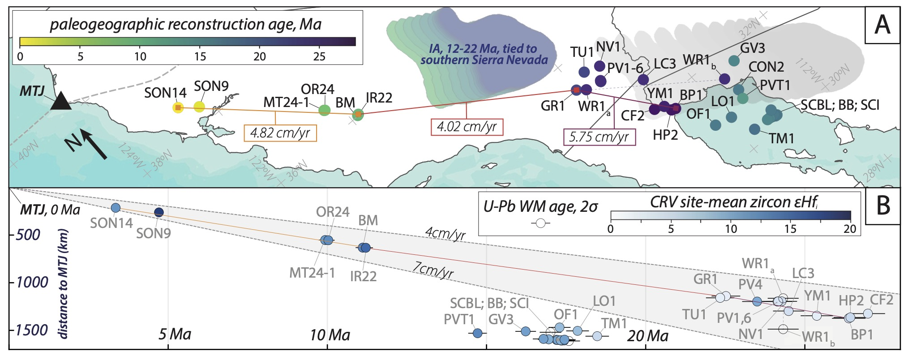
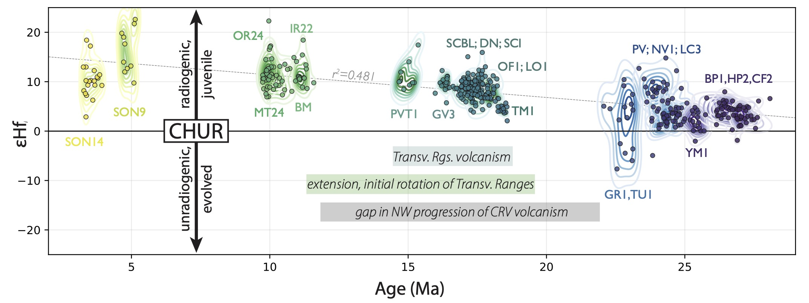
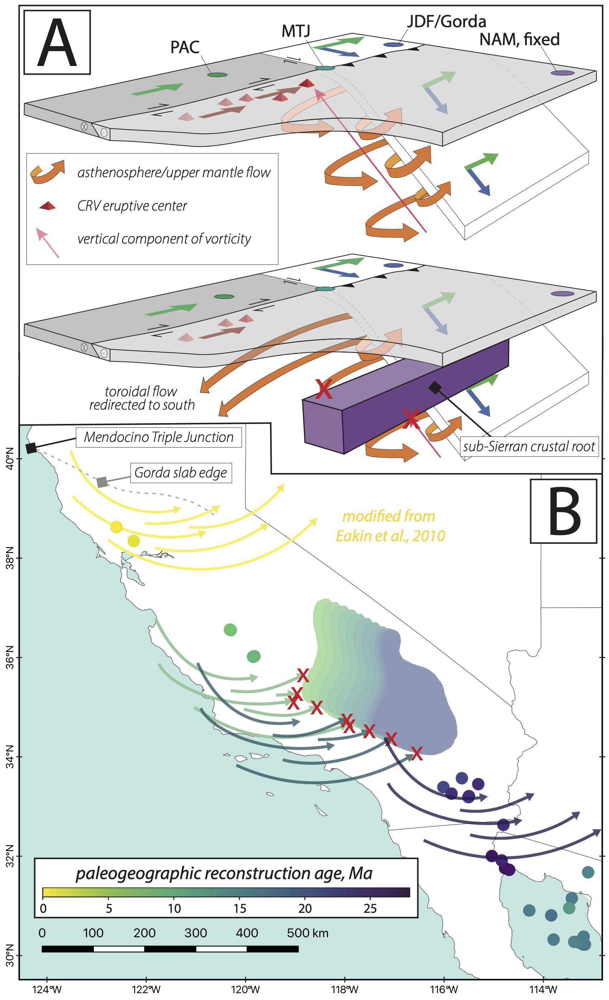

The collision of an oceanic spreading center with a subduction zone can result in the creation of a slab window beneath the overriding plate, as well as the development of a transform margin outboard of the slab window. Volcanism has been observed to occur in many supra-slab-window settings. However, the driving mechanisms of this slab-window volcanic activity remain unclear, in part because of the complexity of constraining the spatiotemporal evolution of volcanism along evolving transform boundaries. Here, we integrate zircon U-Pb ages and Hf isotopic compositions from the Coast Range Volcanics, CA, into a paleogeographic reconstruction of the Californian margin from the Miocene to the present in order to better constrain the age, location, and geochemical evolution of a suite of supra-slab-window volcanic centers.
-
The Coast Range Volcanics eruptive centers exhibit two distinct spatiotemporal trends. The first is a NW-younging linear trend, with volcanism moving northward from ca. 28 Ma to the present at rates equivalent to the relative motion of the Pacific and North American plates. A conspicuous gap in this trend is observed from ca. 22-12 Ma. A disordered cluster of volcanism, located paleogeographically south of the oldest constituents of the NW-migrating trend, occurred ca. 18-15 Ma. Paleogeographically-reconstructed locations of CRV eruptive centers are depicted in panel A, below. 
-
Zircon eHfi values become increasingly positive (increasingly radiogenic) through time (see panel B of figure above, as well as figure below), interpreted to reflect the growth of the slab window inboard of the lengthening Californian transform margin. Furthermore, the only localities with evolved Hf isotopic compositions, potentially indicating contributions/mixing with an evolved crustal component, occur at sites located just prior to the gap in NW-trending CRV activity. 
-
 Drivers of NW-younging volcanism: NW-younging CRV activity traces the transit of the trailing edge of the subducting Gorda slab, inboard of the Mendocino Triple Junction. The relative motion of this trailing slab edge through the asthenosphere drives counterclockwise toroidal flow through the slab window. We posit that the vertical vorticity component of this toroidal flow, which points upward, is responsible for driving a heat and material flux that is responsible for the NW-younging volcanic trend (a cartoon of this model scenario is shown in panel A, at left). Furthermore, obstruction of this toroidal flow by a sub-crustal structure could drive the observed gap in NW-younging volcanism. This gap is spatiotemporally coincident with the passage of the Gorda slab edge beneath the paleogeographically-reconstructed location of the southern Sierra Nevada, which has been hypothesized to have had a thick crustal root that has since delaminated. Hf isotopes further suggest interaction of evolved crustal material immediately prior to the gap; we suggest that the interruption of toroidal flow by the thick crustal root of the southern Sierra Nevada drove the temporary cessation of NW-trending CRV activity.
- Drivers of disordered cluster of 18-15 Ma volcanic activity: 18-15 Ma CRV centers are temporally and paleogeographically coincident with the initial extension and clockwise rotation of the Transverse Ranges. We suggest that these localities reflect local crustal thinning and melting associated with extension along this portion of the evolving transform boundary. This pulse of activity may also have been influenced by regionally-redirected asthenospheric flow during the occlusion of the Gorda slab edge by the southern Sierra Nevadan crustal root (panel B). Notably, this occlusion may have prevented eastward asthenospheric flow through the slab window at a regional scale, potentially reducing east-vergent shear on the overlying North American crust. In our reconstruction, occlusion of the Gorda slab edge by the southern Sierra Nevadan crustal root occurs concomitantly with increased extensional faulting and volcanism in the Basin and Range province.